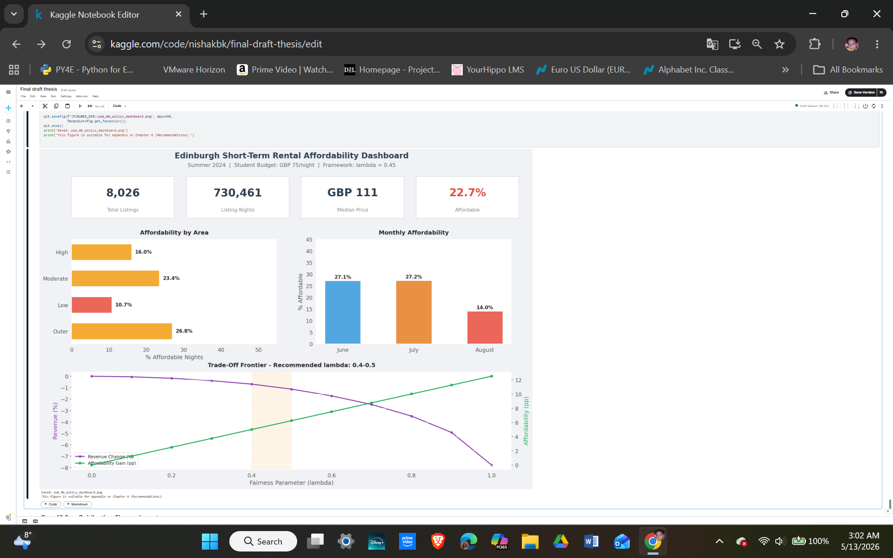
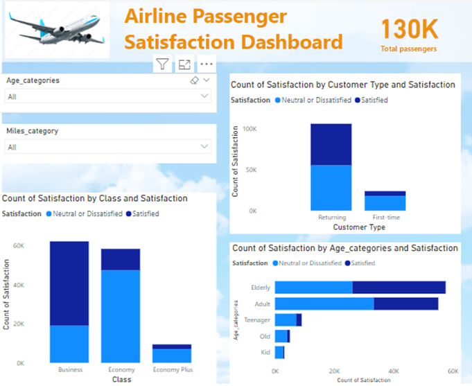
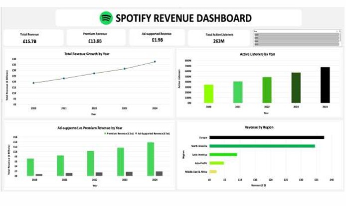
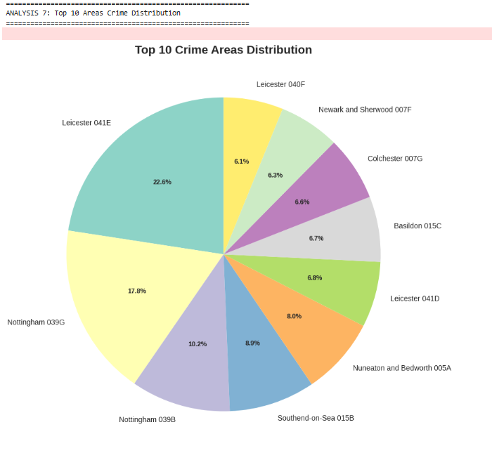
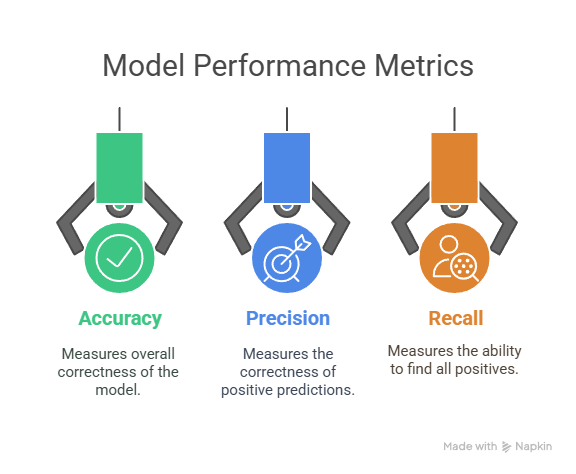
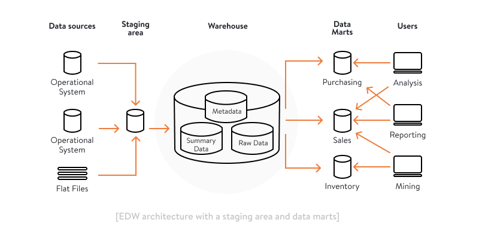

About Me
I am a recently graduated Data Analyst with a background in engineering and business experience. I have experience building automated data pipelines and ETL systems that process over 900K records while ensuring data quality and maintaining fairness in high-stakes environments.
I have a practical understanding of how data supports operational decisions beyond just reporting. From fairness-aware pricing to querying large-scale police records, I translate technical requirements into reliable findings for both technical and non-technical teams.
Projects

Fairness-aware Dynamic Pricing with Airbnb Rentals
Processed 730,461 listing-nights across 8,026 Edinburgh Airbnb rental properties. Trained Random Forest (R²=0.39) and XGBoost (R²=0.45) models to predict nightly prices. Built a "prioritised-compliance" fairness mechanism that targeted the most aggressively overpriced listings. At the recommended setting (λ=0.45) with fairness parameter, student affordability rose from 22.7% to ~28% while host revenue dropped by less than 1.1%. The framework proved robust across two independent baselines and three different budget thresholds.

Airline Passenger Satisfaction Factors
Analyzed a large-scale airline passenger dataset using SAS Enterprise Miner. Built and compared eight predictive models — including Decision Trees, Logistic Regression, and Neural Networks — to identify key drivers of passenger satisfaction. The final optimised model accurately flagged 9 out of every 10 dissatisfied passengers, providing clear operational insights for service improvement.

Spotify BI Architecture and Dashboard
Designed a conceptual Business Intelligence architecture for Spotify, covering internal and external data sources, and evaluating the role of unstructured data in recommendation engines, sentiment analysis, and ad targeting. Aligned with McKinsey's data transformation shifts, then built an executive-facing revenue dashboard in Excel visualising five years (2020–2024) of revenue, premium vs. ad-supported streams, listener growth, and regional distribution using Moriarty's and Geckoboard's design principles.

UK Crime Data Analysis
Analysed 912,621 UK police crime records from four counties over 25 months using PySpark. Identified seasonal peaks, yearly trends, and high-density crime hotspots, producing location-based insights to support strategic resource allocation and operational planning.

Titanic ML Prediction across Various Models
Built an end-to-end machine learning pipeline in Python to predict Titanic passenger survival, covering data cleaning, missing value imputation, feature engineering, and model evaluation. Compared Logistic Regression, Naive Bayes, and Random Forest, with Random Forest achieving the best performance at 81.03% accuracy. Feature importance analysis identified Gender, Passenger Class, and Fare as the strongest predictors, aligning with historical survival patterns.
UK College Performance
Merged and cleaned three years of performance data from UK Further Education and Sixth Form colleges. Applied non-parametric tests (Kruskal-Wallis, Spearman) after confirming non-normal distributions. Found a strong positive correlation (rho = 0.55) between average contact hours per learner and Value Added Factor, while graduation pass rate showed only weak links to contact hours. Sixth Form colleges consistently outperformed FE colleges, and large institutions in the South East achieved the highest performance.

Midland Theatre Data Warehouse & Data Mart
Designed and implemented a star schema data mart in Oracle SQL for a theatre ticket-sales scenario. Declared the grain (one row per client, theatre, production, and month), identified four dimensions (Client, Theatre, Production, Month) and one fact table with an additive sale_amount measure, then wrote full DDL with surrogate and natural keys. Built the ETL pipeline using sequences and multi-table joins, validated row counts, and compared equivalent analytical queries on OLTP vs. mart — demonstrating the dimensional model's advantages for reporting and ranking.

Smart Home Automation System
Designed and prototyped a Wi-Fi-based home automation system that lets users remotely monitor and control appliances from an Android device. Built around an Arduino Uno with an ESP8266 Wi-Fi module, the system integrates an LM35 temperature sensor, a 16x2 LCD display, and relay-driven outputs for a water pump, light switch, and fan. Implemented three core automations: automatic water-level monitoring, temperature-based fan speed control, and a remote-controllable light switch — with full block diagrams, algorithms, and flowcharts.

Follow Me Bot — Autonomous Human-Following Robot
Built a 4-wheeled autonomous robot that detects, tracks, and follows a target person in real time. Used a Raspberry Pi 3B with a Pi Camera v2 for vision and an Arduino Uno for motor control, communicating over UART. Implemented object tracking in Python with OpenCV, choosing the MOSSE tracker after benchmarking heavier algorithms (KCF, CSRT) that dropped to 1–4 FPS on the Pi. Solved real engineering constraints — swapped an LM7805 for an LM2596 buck converter and split processing between Pi and Arduino. The final prototype follows a target until stop, with a buzzer to signal a lost target.
Skills
Data Analysis & Modeling
- Python (pandas, scikit-learn, XGBoost, SHAP)
- SAS (Base, PROC SQL, Enterprise Miner)
- Statistical Analysis (Kruskal-Wallis, Chi-square, Correlation)
- Machine Learning (Random Forest, XGBoost, Decision Trees, Neural Networks)
- Cross-validation & Model Evaluation
Data Engineering & Big Data
- SQL & Oracle SQL
- Spark SQL & PySpark
- ETL Pipelines & Data Cleaning
- Star Schema & Dimensional Modelling
- Schema Design & Validation
Business Intelligence & Visualization
- Power BI
- Excel (Power Query, PivotTables)
- One-page Dashboards
- KPI Design & Reporting
- Data Storytelling
Business & Client-Facing Experience
- Customer Service & Client Relationship Management
- Team Collaboration & Cross-functional Communication
- Time Management in High-Pressure Environments
- Confidentiality & Person-Centred Care
Contact
Email me at nishakhadkabk@gmail.com if you have any questions.